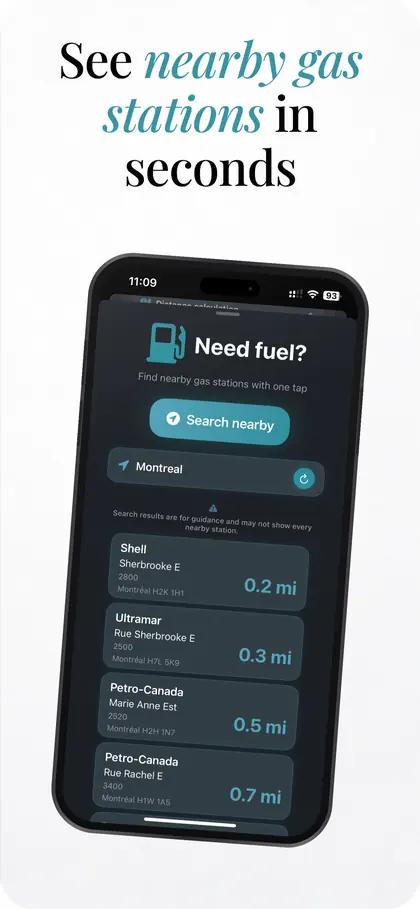

Výpočet nákladů na cestu bez tabulky
Zadej vzdálenost, spotřebu v l/100 km, cenu paliva a poplatky na trase. Tankio zobrazí přehledný součet nákladů na jízdu autem.
iOS aplikace pro cesty autem
Tankio je kalkulačka nákladů na jízdu pro iPhone. Vypočítá cenu cesty podle kilometrů, spotřeby auta, ceny paliva a dálničních či mýtných poplatků.
Jízdu si uložíš, můžeš ji rozdělit mezi cestující a vyexportovat do PDF.
Stáhnout z App Store
Zadej vzdálenost, spotřebu v l/100 km, cenu paliva a poplatky na trase. Tankio zobrazí přehledný součet nákladů na jízdu autem.
Uložené trasy a historie jízd, rozdělení celkové částky mezi cestující, blízké čerpací stanice, připomínky dálniční známky, přepočet podporovaných měn a PDF souhrny jízd.
Umí Tankio vypočítat cenu jízdy?
Ano — podle kilometrů, spotřeby, ceny paliva a dálničních nebo mýtných poplatků.
Je Tankio pro iPhone?
Ano, pro iPhone s iOS 16.4 nebo novějším.
Jsou PDF exporty účetní doklady?
Ne. Slouží pro osobní přehled a evidenci jízdy.